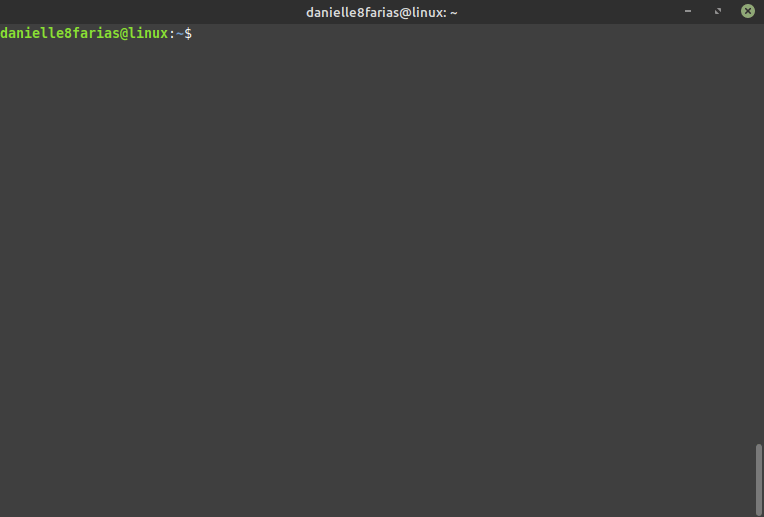
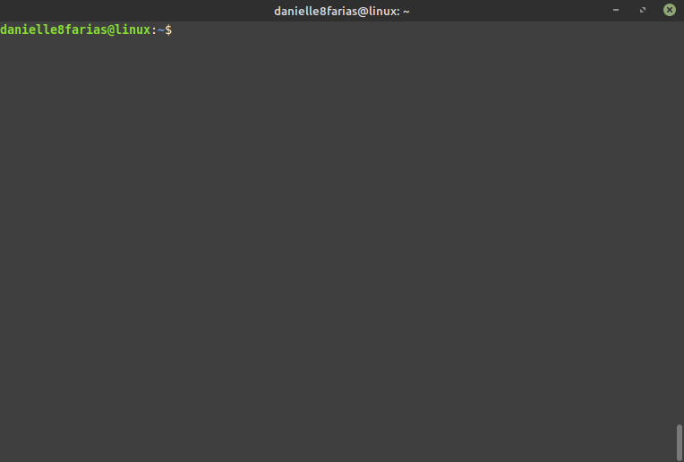

No terminal digite:
$ mkdir <nome_do_diretório>
- $ indica que você deve usar o usuário comum para fazer essa operação.
- mkdir do inglês, make directory, é o comando que vai criar o nosso novo diretório/pasta.
- digite o nome do diretório sem os sinais < e >.
Para ver um retorno da tela de que o diretório foi criado com sucesso, basta usar o argumento -v, assim
$ mkdir -v <nome_do_diretório>
- v, de verbose, retorna na tela o que o sistema fez ou está fazendo.
Criando vários diretórios ao mesmo tempo
Para criar mais de um diretório ao mesmo tempo, basta usar o comando mkdir, com o nome dos diretórios e um espaço entre eles.
Exemplo:
$ mkdir js css img
Acima, criamos três diretórios simultaneamente.
Criando um subdiretório
Para criar um subdiretório, em um diretório já existente, digite:
$ mkdir <diretório_que_já_existe>/<novo_diretório>

Criando um diretório e um subdiretório
Para criar um diretório e um subdiretório ao mesmo tempo, digite:
$ mkdir -p <diretório>/<subdiretório>
- p do inglês, parents, se o diretório pai não existir, ele será criado. É o que permite a criação dos dois juntos; o diretório filho e o diretório pai.